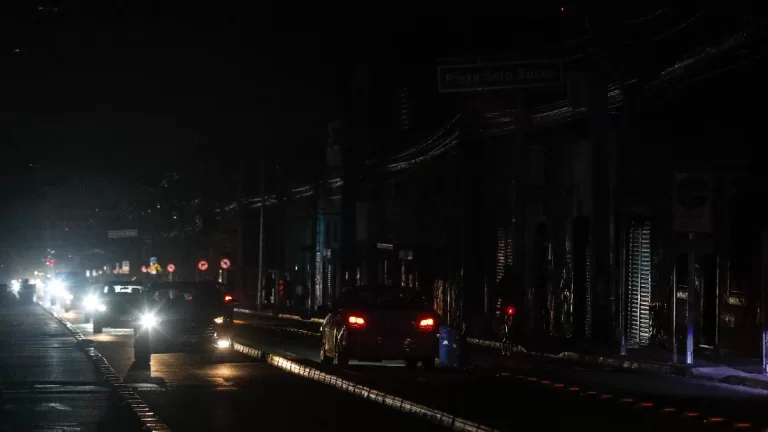

INICIO
ULTIMAS NOTICIAS
|  | Categoria:Nacional | Cortes de luz en la región Metropolitana: Más de 88 mil clientes están sin suministro | Este domingo se registra en la capital del país un sistema frontal con isoterma cero alta por la que se espera la caída de hasta 30 milímetros de agua en zonas precordilleranas y cordilleranas. | Leer más |
| Categoria: Emergencia | SHOA descarta tsunami en Chile tras temblor 7,0 en Tonga | El Servicio Nacional de Prevención y Respuesta ante Desastres (Senapred) descartó la ocurrencia de un tsunami en las costas chilenas tras el temblor que afectó a Tonga este domingo. | Leer más | |
| Categoria: Futbol | De los mejores pagados del plantel: el millonario sueldo que gana Felipe Loyola en Independiente | El seleccionado chileno la está rompiendo en el fútbol argentino, siendo una de las principales figuras del torneo. Felipe Loyola anotó un doblete este fin de semana. | Leer más |